Definicion de CRUD
CRUD es el corazón de cualquier aplicación interactiva. Es un acrónimo y son las operaciones fundamentales que permiten a los usuarios:
C: Create (Crear)
R: Read (Leer)
U: Update (Actualizar)
D: Delete (Eliminar)
Desde gestionar una base de datos hasta interactuar con una interfaz web, CRUD es el conjunto de acciones esenciales para cualquier sistema dinámico que maneje información. Si alguna vez has llenado un formulario en línea, consultado un reporte o modificado un perfil, ¡ya has experimentado el poder de CRUD en acción!
Como crear un CRUD desde cero utilizando Django
Paso 1: Crear el entorno virtual
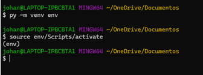
Paso 2: Instalamos Django
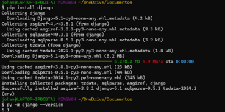
Paso 3: Crear un nuevo proyecto de Django
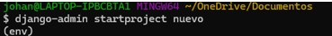 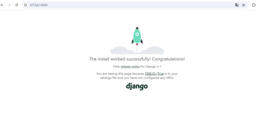
Paso 4: Crear la aplicación llamada CRUD
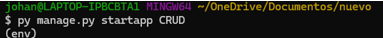
Paso 5: Configuramos nuestra proyecto y abrimos settings.py y agregamos la aplicación en INSTALLED APPS agregando crud.apps.CrudConfig
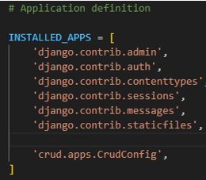
Paso 6: Creamos nuestros modelos en Models.py
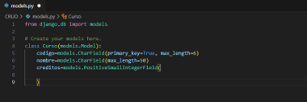
Paso 7: A continuación, se verá el panel de administración
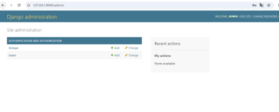
Paso 8: Ingresamos en el archivo views.py y agregamos el código
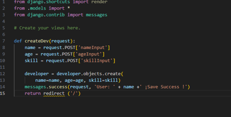
Paso 9: Posteriormente creamos una carpeta llamada urls.py debajo de crud y agregamos en el urls.py principal la url de CRUD
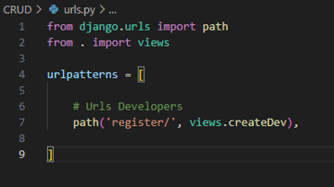 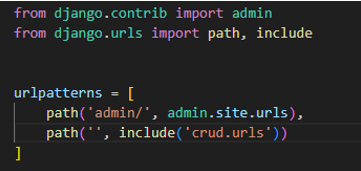
Paso 10: Creamos una plantilla, pero primero creamos una carpeta llamada templates que contendrá los html
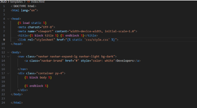
Paso 11: Posteriormente creamos un formulario
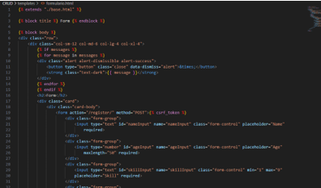 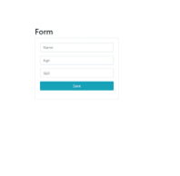
Paso 12: Por último, hacemos cambios a la views, urls e index para agregar o eliminar y así queda el CRUD
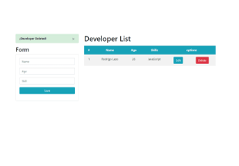